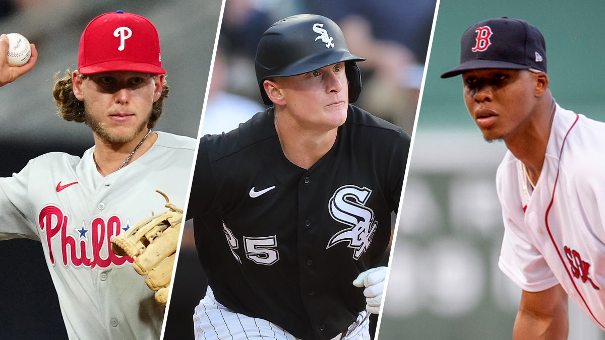
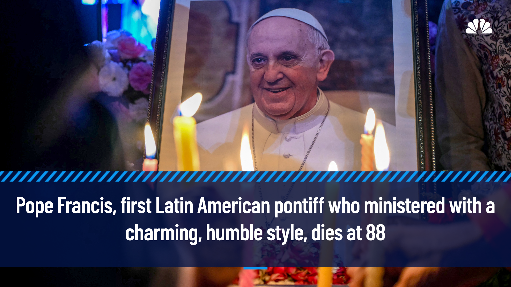
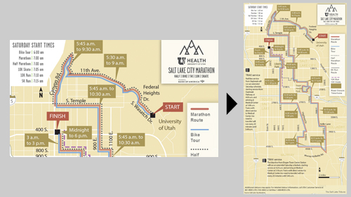
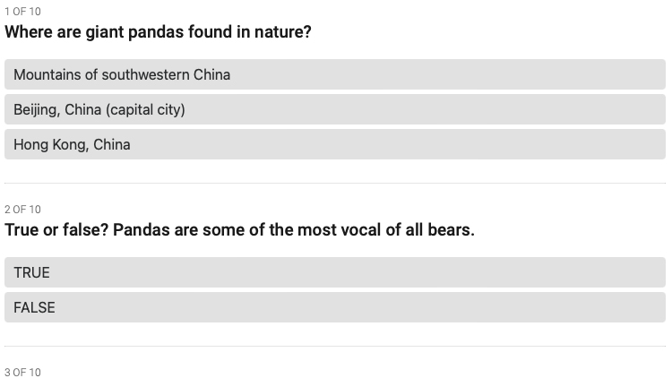
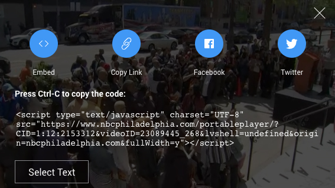
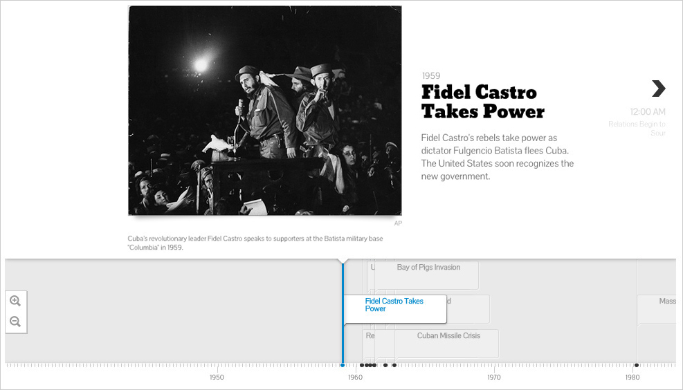
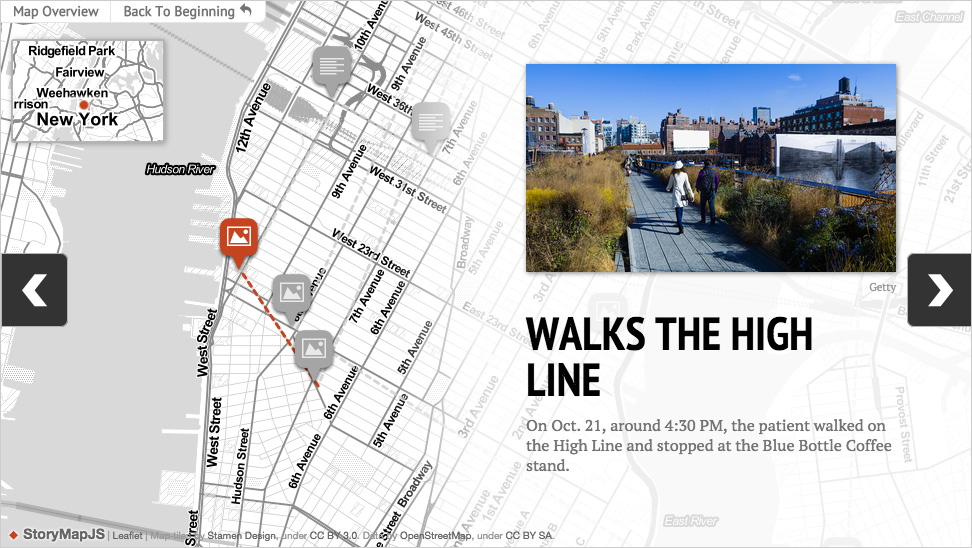
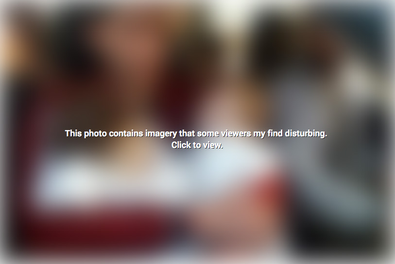
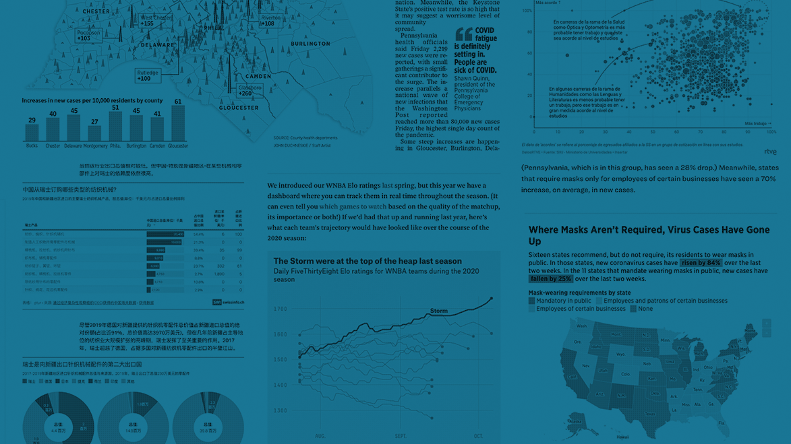

Split Images
Create 2 or 3 panel composite images. Once you've created and downloaded the image, you can upload to Wordpress.
Social Cards Generator
Create social cards in various sizes
Vertical Image Embed
Use this tool if you want to embed a vertical image in your article.
Quizzes
First iteration of a simple multiple choice quiz generator.
Video Embed Code Converter
Convert partner video embed code so it works better on our sites; take any NBC Local javascript embed and covert it an iframe embed.
Before/After Sliders

This is a tool created by Knight Labs that allows you to compare two pieces of similar media, including photos, and gifs. It’s ideal for highlighting then/now stories that explain slow changes over time (grown of a city skyline, regrowth of a forest, etc.) or before/after stories that show the impact of single dramatic events (natural disasters, protests, wars, etc). Embed code goes into a Custom HTML block in Wordpress.
Timelines
This is a tool created by Knight Labs. It best utilized when you have media elements (images, video, tweets, maps among other things) for a majority of the events. Embed code goes into a Custom HTML block in Wordpress.
StoryMaps
This is a tool created by Knight Labs. It's best utilized when you have a series of events where locations are important. Embed code goes into a Custom HTML block in Wordpress.
Image Blur/Reveal
Use this tool if you have a sensitive photo that you want to warn readers about first.
Charts, Maps, and Tables
Datawrapper allows you create simple charts, maps, and tables in minutes. If you need a login, let us know. To embed a Datawrapper visualization in Worpress, just copy the published visualization url and paste into an empty block.